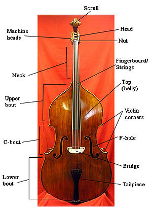

The Bass
The bass is the largest instrument in the string sections (the other string instruments being violin, viola, and cello). It is made of wood and has four strings (tuned to E1, A1, D2 and G2) that unlike the other string instruments, are tuned in fourths (as opposed to fifths). The bass is the closest descendent of the obsolete viola da gamba, a cello-like instrument used in the Baroque era. In the orchestra, the double bass often plays the bass line. They are the only instrument to play standing in the orchestra (some players may use a tall stool). Normally, basses are positioned behind the celli, but they may even be behind the second violins, especially if the second violins and celli are swapped.
Jokes
Did you hear about the double bass who played so out of tune his section noticed?